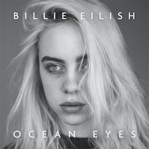
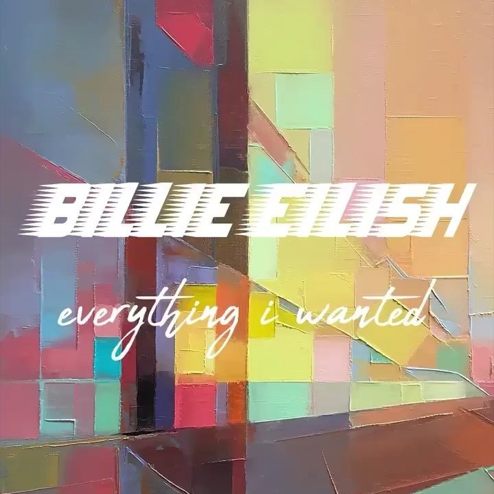

Las Mejores Canciones de Billie Eilish
"Bad Guy"
- Una de las más icónicas.
Escuchar "Bad Guy"
"Ocean Eyes"
- El éxito que la hizo famosa.
Escuchar "Ocean Eyes"

"When The Party's Over"
- Conmovedora y emotiva.
Escuchar "When The Party´s Over"
"Bury a Friend"
- Con un estilo único.
Escuchar "Bury a Friend"
"Everything I Wanted"
- Ganadora del Grammy.
Escuchar "Everything I Wanted"
